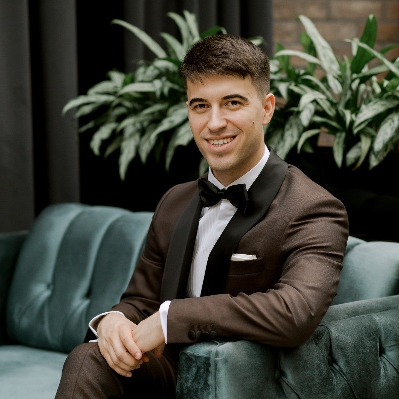

Ion Godiac

- Experienced Product Manager in Telecommunications |
- Expert in Product Management, Data Analysis, Agile Methodology, and Marketing Strategy |
- Proven Success in Cross-Functional and Cross-Country Collaboration
Contact me via:
About me
I'm a TV Product Manager with 5 years of experience in the telco industry and marketing. I specialize in product management, data analysis and marketing strategy. My journey has been all about innovation & making great products for our customers.
Career overview
I started my career in marketing, focusing on product marketing for fix broadband and TV services. I helped deploy new equipment, improved customer journeys, and did deep data analysis to give valuable insights to top management, with impact on crucial strategic decisions.
For the past 3 years, I led introduction of the first Android TV Box with a custom Launcher application on the market, transforming the customer experience. Now, I'm leading the view and development of a new cross-platform TV Application, working with international partners on technical aspects, application interface and user experience design, end-to-end integration within the existing systems, and frontline training.
Achevements
- Part of the team that grew our Fiber and TV customer base from a new market entrant to over 100,000 customers.
- Created important dashboards and analyses to understand the evolution and results of Fix utilization rates and acquisition results.
- Successfully introduced the 1st Android TV Box with a launcher application in the local market.
- Sucessfuly launched the MVP for the new TV Application, including publication on the Store.
Skills and expertise
- Managing the FUT community of over 100 people, gathering feedback, and analyzing data.
- Skilled in SQL for extracting data from big databases and proficient in creating complex dashboards an analysis in Microsoft Excel.
- Leading projects using agile practices for efficient and effective product development.
- Developing go-to-market strategies and coordinating product launches from field operations to customer care, sales and the communication.
Unique Qulities
- Cross-Functional Collaboration: Proven success working with various teams within the company and international partners from Poland, France, India, and Denmark.
- Customer-Centric Approach: Using customer data to drive product improvements and enhance user experiences.
- Technical Proficiency: Experience with PowerPoint, Excel, Jira & Confluence, SQL, Android Debug Bridge, and AI prompt engineering.
- Strategic Vision: Creating complex business cases for multimillion-dollar investments, backed by a solid understanding of the telecommunications industry.
Experience
Orange Moldova
- TV Product Owner
Full-time, Apr 2022 - Present | 2 yrs 3 Mos
- Fixed service Product Marketing Expert
Full-time, Oct 2019 - Apr 2022 | 2 yrs 7 Mos
- Telesales Expert
Part-Time, Jun 2017 - Sep 2019 | 2 yrs 4 Mos